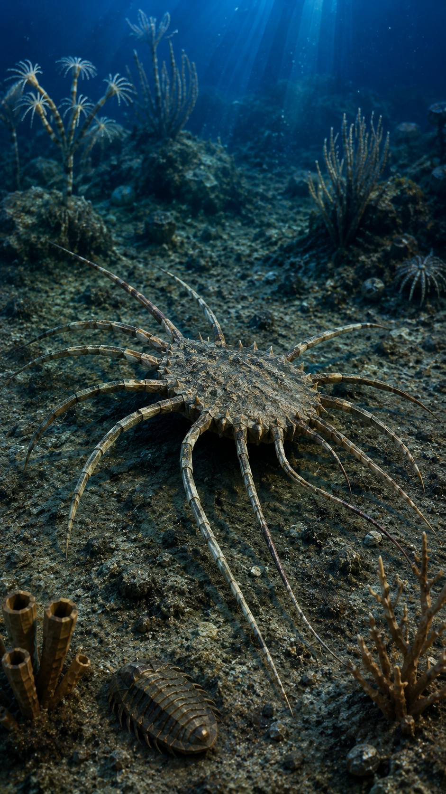
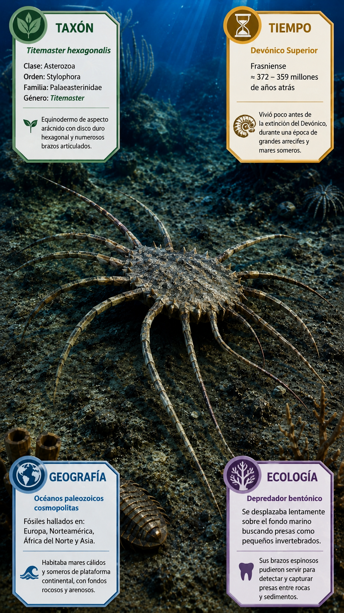
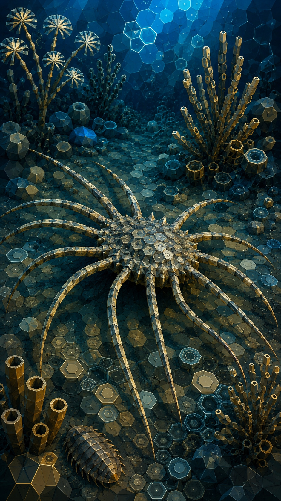
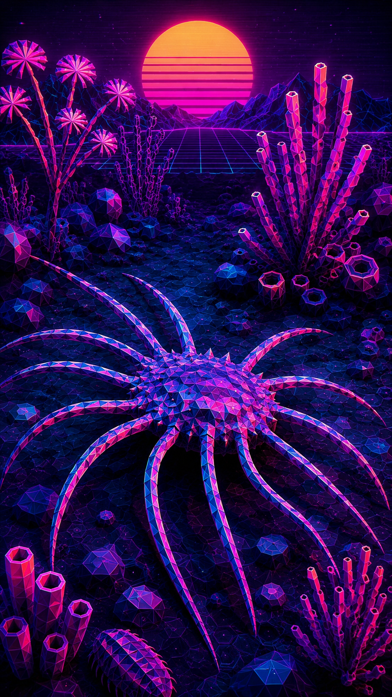

Paleoficha de PalEntropía




TAXÓN:
Mimetaster hexagonalis
CLADO:
Artiopoda (Marrellomorpha, Marrellidae)
DIETA:
Suspensívoro / Detritívoro bentónico (filtrador de micropartículas orgánicas y plancton en suspensión próxima al sustrato)
TAMAÑO:
Longitud total aproximada de 1.5 a 2.5 centímetros (sin incluir los apéndices cefálicos extendidos)
LOCOMOCIÓN:
Bentopelágica limitada; natación baja o desplazamiento sobre el sustrato mediante apéndices birramideos adaptados para la propulsión en aguas tranquilas de plataforma
TIEMPO:
Cámbrico Inferior a Medio (Series 2-3, aprox. 516-505 Ma)
GEOGRAFÍA:
Europa Central (Alemania, Pizarra de Hunsrück / Hunsrück Slate)
EQUIVALENCIA PALEOGEOGRÁFICA:
Cuencas marinas profundas, ambientes de plataforma distal y zonas de sedimentación anóxica o de baja energía
AMBIENTE PALEAOECOLÓGICO:
Ecosistemas marinos de plataforma continental profunda con excepcional conservación tafonómica por piritización (Konservat-Lagerstätten).
ECOLOGÍA:
• Flora: Fitoplancton marino primitivo y materia orgánico-detrítica en suspensión.
• Fauna secundaria: Comunidad de la biota de Hunsrück, incluyendo trilobites, equinodermos basales (Encrinites), y organismos nektonicos de cuerpo blando.
• Nichos: Consumidor primario y filtrador bentopelágico. Presenta un escudo cefálico plano y ensanchado provisto de espinas laterales curvadas hacia atrás, además de un par de apéndices cefálicos anteriores masivamente ramificados en forma de pluma o peine, interpretados como estructuras especializadas para la captura de partículas en suspensión. El tronco consta de múltiples segmentos articulados seguidos de un telson reducido, y los apéndices locomotores son birramídeos con una rama branquial laminar adaptada para el intercambio gaseoso en aguas con gradientes de oxígeno reducidos.
• Relaciones: Marrellomorpha. Artrópodo enigmático estrechamente emparentado con Marrella, que representa una de las radiaciones más tempranas de artrópodos mandibulares o afines con exoesqueleto no calcificado.
CLIMA:
Wm20 (Cámbrico global cálido con zonas locales de estratificación y anoxia en cuencas profundas).
ESTADO ECOLÓGICO:
Extinto. Componente especializado de las comunidades bentopelágicas de los mares cámbricos, adaptado a microambientes de fondo blando y baja energía hidrodinámica.